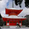
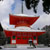

Koyasan: an ancient small town with temples and shrines in the snow. Here you can stay with Buddhist monks in the
birthplace of Japanese buddhism. Wake early for the morning recitations and then enjoy the best food.

Koyasan: an ancient small town with temples and shrines in the snow. Here you can stay with Buddhist monks in the
birthplace of Japanese buddhism. Wake early for the morning recitations and then enjoy the best food.


Nagoya Castle was rebuilt after the destruction of World War 2, in the original style.
Now the castle is a museum. From the top there are fine views across Nagoya.

The castle architecture has been faithfully reconstructed, including the golden dolphins atop the main tower.
The castle is set in attractive gardens with a large number of colourful plants and trees.
One of the outlying turret towers survived the war, and now sits next to the moat.
At night, Nagoya shows us its urban side. Oasis 21 floats above the shops and Nagoya TV Tower rises above.


By day, we see the shiny city.


In the heavy snowfall bicycles were covered in a thick blanket of white.
A trip up Nagoya TV tower is a must, with views across the town to the towers of the railway station.


From the viewing gallery, Taeko looks out across the city where she lives.


Oasis 21 is a shallow pond, elevated above a shopping centre. You can look through the ripples to people down below, and they can look up at your feet. Is it art? Architecture? Is there a difference?


Taeko lives in a palace - a Leopalace. Here are some views of her neighbourhood.